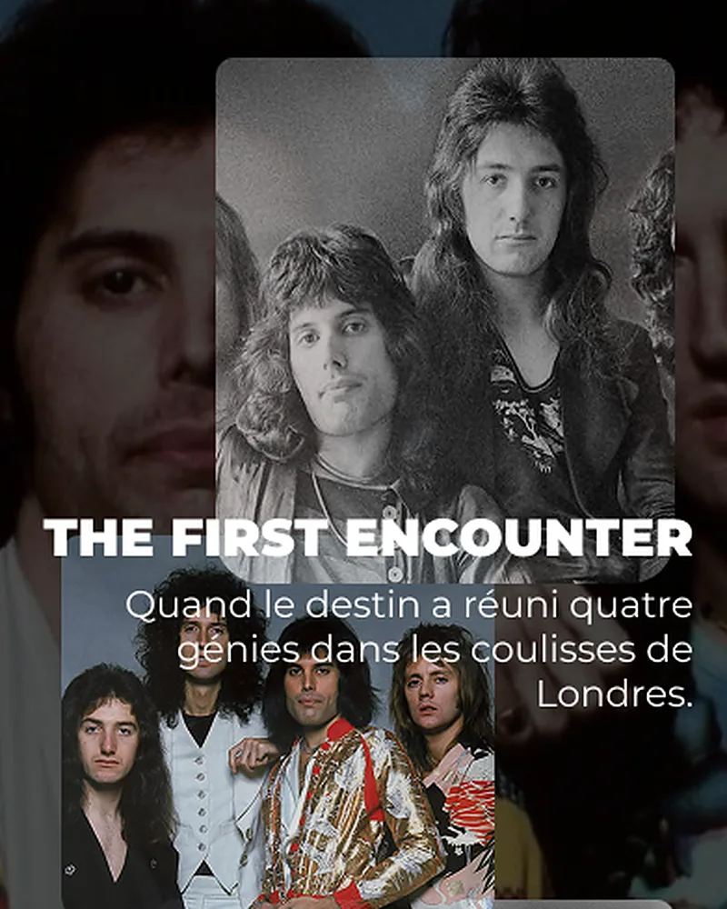
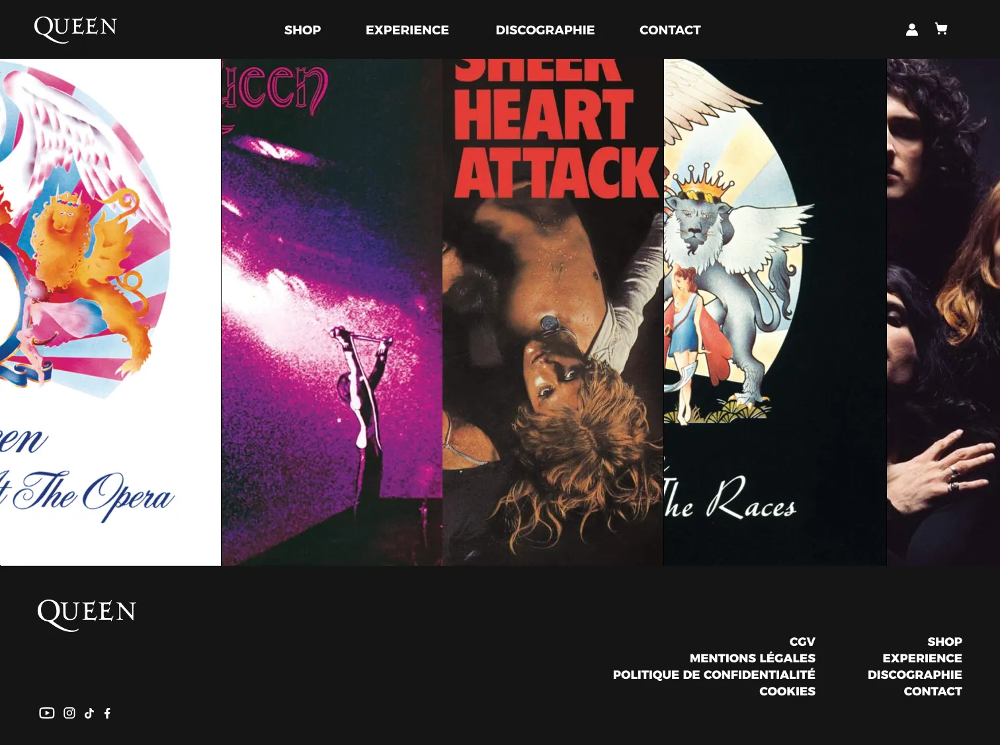
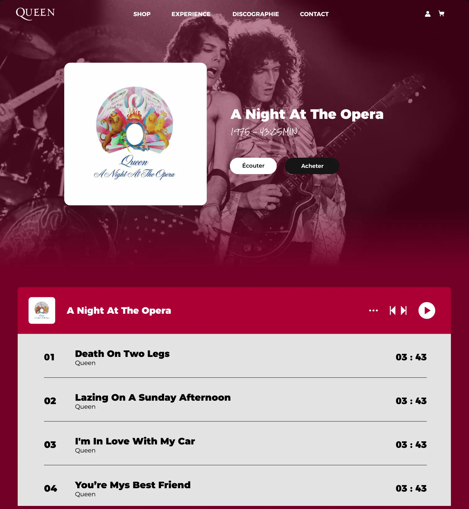
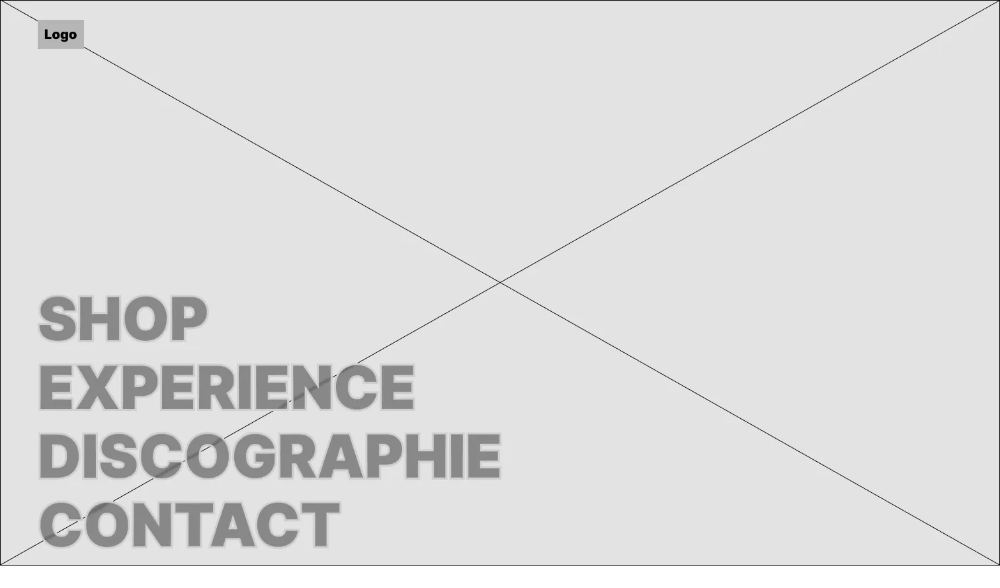
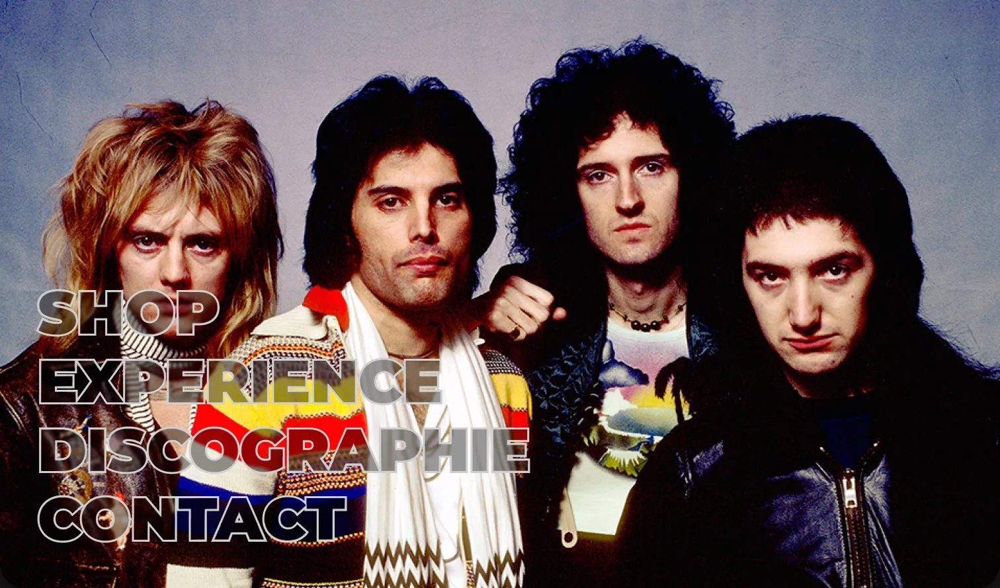
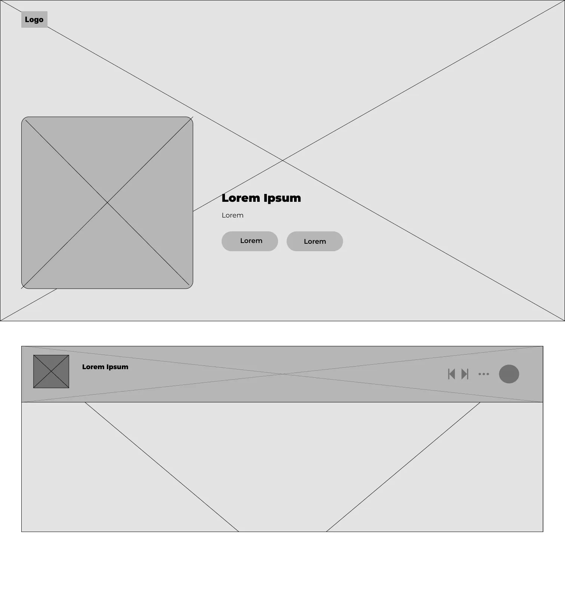
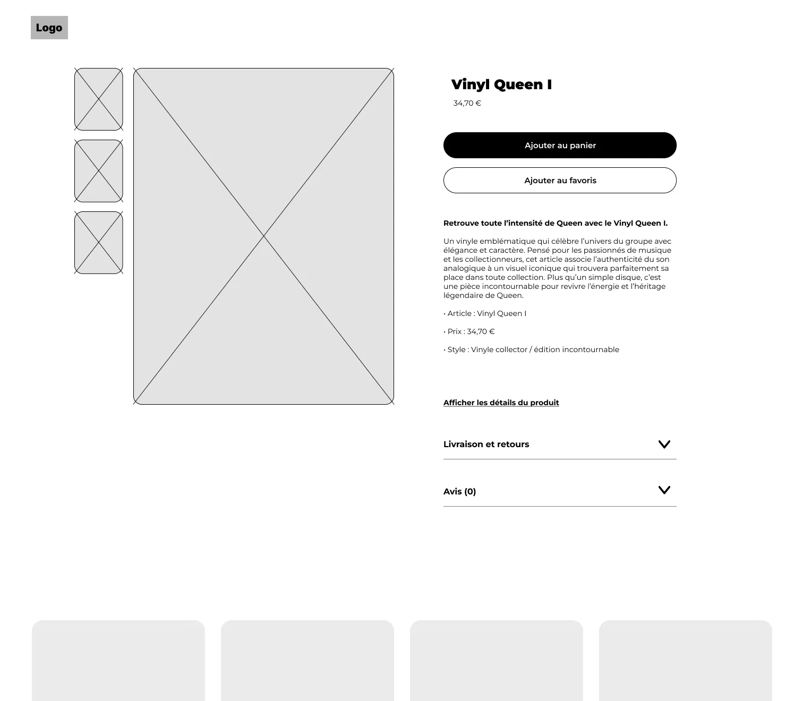
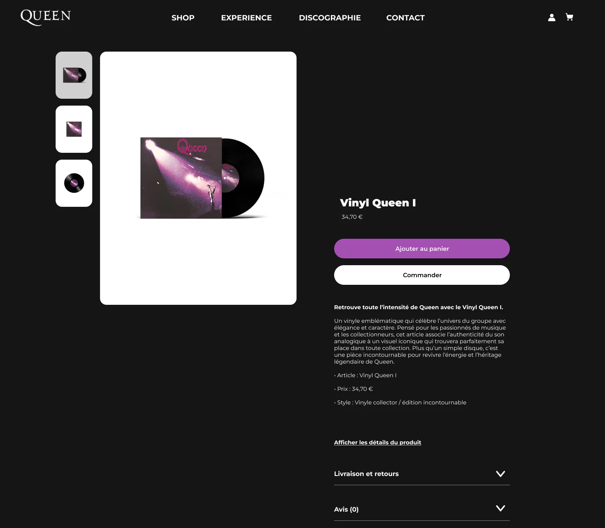
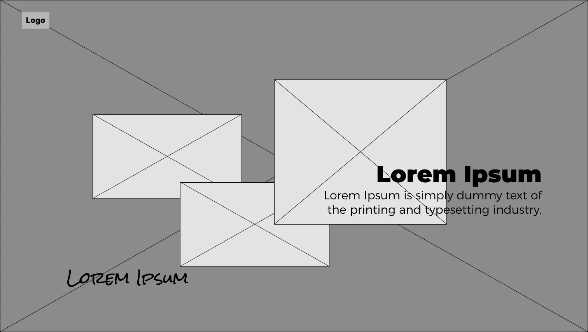
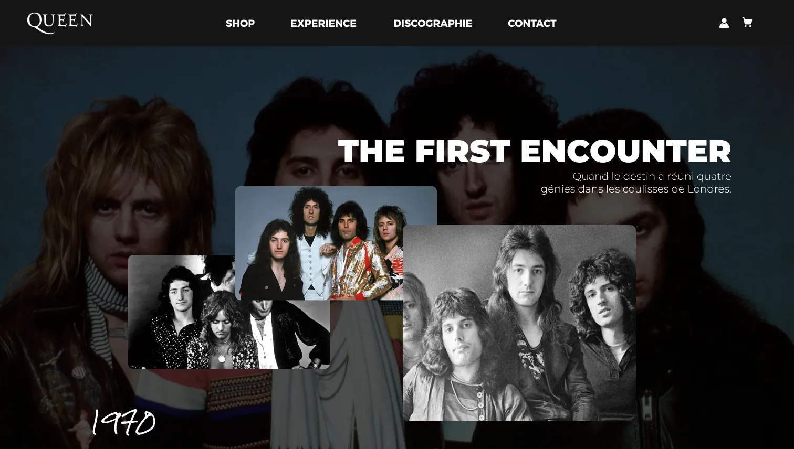

Queen
Site d'artiste avec boutique, 2026. Yboost, le gros projet de l'année à Ynov Bordeaux, à quatre sur plusieurs mois. Mon rôle : wireframes et prototype interactif. Figma.
Voir le prototypeLe projet
Le brief Yboost : un site WordPress consacré à un artiste, conçu de bout en bout, du wireframe au prototype, avec son design system. À quatre, on a choisi Queen. Le site mêle vitrine et e-commerce : une discographie, des contenus éditoriaux sur l'histoire du groupe et une boutique de vinyles.
J'ai réalisé les wireframes basse fidélité de tout le parcours : accueil, discographie, fiche album, boutique, fiche produit, panier, contact et blog. La navigation typographique de l'accueil est posée dès ce stade. Les maquettes haute fidélité reposent sur un design system commun (typographies, couleurs, composants) qui aligne la boutique et les pages éditoriales. J'ai ensuite relié tous les écrans en prototype interactif sur Figma, qui a servi de base à l'intégration WordPress faite par une autre personne du groupe.







Le menu en grosses lettres que j'avais posé dans le wireframe gris est resté jusqu'au site final.